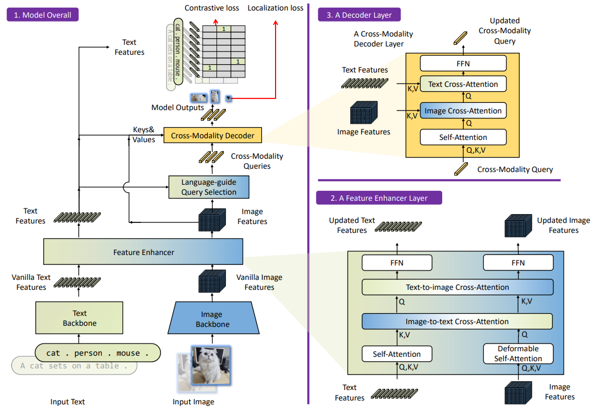

Grounding DINO has recently gained popularity for integrating text-to-image alignment into a DETR-based object detection (OD) model. While it is neither the first model to introduce grounded object detection nor the first to propose a Transformer-based end-to-end OD approach, it achieves competitive performance by simply combining GLIP and DINO.
In this post, I’ll walk you through the design of Grounding DINO and explain why it excels at zero-shot object detection.
Model Structure

The figure above, taken from the published paper, provides an overview of Grounding DINO, highlighting two key components. Let’s start with the input: for a grounded OD model, there are two types of inputs—an image and a text prompt.
Grounding DINO supports text prompts in two formats: a full sentence or a set of keywords. Based on my experience, it performs better when using keywords. As stated in the paper, when Grounding DINO detects that the input is a full sentence, it processes the text through a filtering block to extract keywords. However, this means some important information might be lost.
For example, if we provide an image and the text prompt “cat, person, mouse”, the first step is feature extraction using pretrained backbones. The text backbone is BERT, while the image backbone is Swin Transformer. The raw feature dimensions are as follows:
- Text feature: (sequence length, d)
- Image feature: (H, W, d)
Feature Enhancer
Next, these raw features are fed into the feature enhancer, which consists of multiple Feature Enhancer Layers (shown in the bottom right of the figure). Within each layer, there is:
- Deformable self-attention – a more computationally efficient version of standard self-attention.
- Image-to-text cross-attention, which takes the tokenized image features as queries (Q) and outputs a feature of shape (H × W, d) (and vice versa for text-to-image).
Language-Guided Query Selection
The Language-Guided Query Selection module is illustrated in the figure below. Essentially, it selects the top-k image tokens that are most relevant to the text tokens, refining the alignment between text and image features.

Cross-Modality Decoder
Each layer in the Cross-Modality Decoder, shown in the overview, is a stacked block consisting of:
- Self-attention
- Two cross-attention layers
- A feed-forward network (FFN)
Each output token represents a bounding box along with a feature vector, which is then used to ground the detection to the text prompt.
Supervision
The loss function in Grounding DINO consists of two main components:
- Localization loss
- Alignment loss
Localization Loss
The localization loss is a weighted sum of:
- L1 loss – Measures the absolute difference between the predicted and ground-truth box positions.
- GIOU loss – Solve the 0 gradient problem of intersection-over-union (IoU) when the predicted and ground-truth boxes are not intersected.
IOU loss can produce gradients for boxes because the intersection and union of bounding boxes are computed using (x, y, w, h), e.g., x - w/2.
Alignment Loss
The alignment loss is an InfoNCE (contrastive) loss, designed to associate bounding boxes with their corresponding text prompts. It works by:
- Forming positive sample pairs between bounding boxes and their corresponding class tokens.
- Forming negative sample pairs between bounding boxes and all other tokens.
This alignment loss serves as a classifier for grounding during the inference phase.